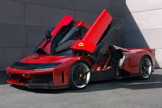

Ferrari F8 Tributo
Ferrari F80
.jpeg)
Ferrari F80
Ferrari F8 Tributo napędzane jest podwójnie doładowanym, 3,9-litrowym V8 o mocy 720 KM. Silnik rozwija 770 Nm maksymalnego momentu obrotowego - to więcej od poprzednika. Jednostka oferuje osiągnięcie 100 km/h po 2,9 sekundy, a prędkość maksymalna wynosi 340 km/h. Tradycyjnie dla poprzedników modelu, także i oferta nadwoziowa F8 Tributo została po kilku miesiącach uzupełniona o otwartą wersję targa o nazwie F8 Spider. Pierwsze informacje na jej temat zostały przedstawione we wrześniu 2019 roku.
Ferrari F8 Tributo

Podobieństwa z samochodem startującym w Długodystansowych Mistrzostwach Świata (WEC) obejmują architekturę, skrzynię korbową, układ i łańcuchy napędowe układu rozrządu, obwód pompy oleju, łożyska, wtryskiwacze i pompy GDI. Oczywiście nie zabrakło również technologii przeniesionych z bolidów Formuły 1. Sam silnik benzynowy to 3-litrowa 120-stopniowa jednostka V6 F163CF z dwoma elektrycznymi turbosprężarkami, o którego konstrukcji można napisać co najmniej pracę doktorską. Ma m.in. tytanowe korbowody, aluminiowe tłoki ze stalowymi sworzniami powlekanymi diamentową warstwą DCL o wysokiej wytrzymałości, dedykowany otwór olejowy dla lepszego smarowania i polerowane kanały dolotowe i wydechowe. Kolejność zapłonu 1-6-3-4-2-5 nadaje silnikowi F80 typową dla Ferrari barwę. Moc maksymalna tej jednostki to 900 KM, a moment obrotowy – 850 Nm. Kolejne 300 KM dokłada układ hybrydowy. W jego skład wchodzą dwa silniki elektryczne z przodu, każdy dostarczający 142 KM, oraz jeden z tyłu, który wspomaga silnik spalinowy mocą do 81 KM. Silniki te zasilane są energią z wysokonapięciowego akumulatora o pojemności 2,28 kWh.